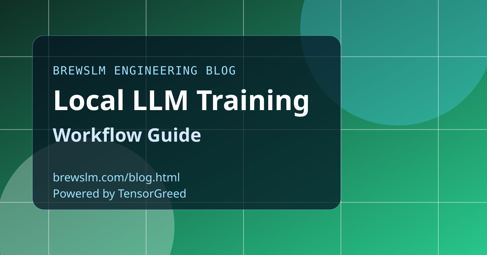

Design the workflow as a contract
Define every stage with explicit inputs, outputs, and validation rules: ingestion, cleaning, split, tokenization, training, evaluation, and export. Contracted stages reduce hidden coupling and make reruns reliable. Engineers should be able to replay a run from metadata alone.
Run preflight before every expensive action
Preflight should verify task and model compatibility, dependency readiness, and memory fit. Catching a blocked run in seconds is better than failing after hours of GPU time. Treat preflight as a required gate, not an optional convenience.
Train in short loops with checkpoint policy
Use short, measurable loops and checkpoint aggressively in early cycles. Compare experiments side by side and keep naming conventions strict. This makes local workflows collaborative and prevents one engineer from becoming the only person who understands a model run.
Export and serve-test in the same workflow
Do not stop at completed training status. Always run export, smoke tests, and target-specific validation in the same pipeline definition. A local model is only useful when it can be packaged and served predictably.